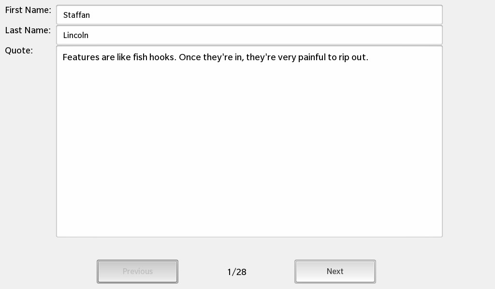

Files:
The SQL Widget Mapper example shows how to use a DataControlMapper to map information from a database to controls in a form.

In this example we'll learn how to access an SQLite database and map the single rows of a SQL table to a set of Cascades controls.
While the standard way in Cascades of visualizing data from a SQL database is to display them in a ListView, there might be use cases where you want to display and edit one row at a time. Such a functionality can be implemented in a reusable component, which will be done in this sample application.
The UI of this example consists of three text fields that show the first name, last name and a quote. These data come from a SQLite database. Additionally the UI provides a 'Previous' and 'Next' button that are used to navigate between the database entries. A status label shows the current and the total number of quotes.
The business logic of the application is encapsulated in the class DataControlMapper, which is exported to the UI as '_dataMapper'.
The text fields in the QML file have all the 'objectName' property set, so that they can be referenced from within C++.
// A standard Button Button { verticalAlignment: VerticalAlignment.Center layoutProperties: StackLayoutProperties { spaceQuota: 1 } text: qsTr ("Previous") // Go to previous data on click onClicked: _dataMapper.toPrevious () // Enable Button if there is previous data enabled: _dataMapper.currentIndex != 0 }
Whenever the user clicks the 'Previous' button, the toPrevious() slot of the DataControlMapper object is invoked. The button is only enabled if the current row is not the first one.
// A standard Button Button { verticalAlignment: VerticalAlignment.Center layoutProperties: StackLayoutProperties { spaceQuota: 1 } text: qsTr ("Next") // Go to next data on click onClicked: _dataMapper.toNext () // Enable Button only if there is more data enabled: (_dataMapper.currentIndex < (_dataMapper.count - 1)) }
Whenever the user clicks the 'Next' button, the toNext() slot of the DataControlMapper object is invoked. The button is only enabled if the current row is not the last one.
// A standard Label Label { verticalAlignment: VerticalAlignment.Center layoutProperties: StackLayoutProperties { spaceQuota: 1 } text: qsTr ("%1/%2").arg(_dataMapper.currentIndex + 1).arg(_dataMapper.count) // Defines custom text Color textStyle { base: SystemDefaults.TextStyles.SmallText color: Color.White textAlign: TextAlign.Center } }
The text of the status label is assembled from the 'currentIndex' and 'count' properties of the DataControlMapper.
The ControlDataMapper is the central class in this application and contains all the business logic of mapping entries from a data model to a set of Cascades controls. It has been designed to be reusable, so any data model can be used, not only one based on a SQLite database.
The ControlDataMapper has the semantics of a cursor that can be moved between the rows of a data model. It provides methods to jump to the first or last row and methods to go to the next or previous row. The single fields (sections) of a row can be bound against Cascades controls. The ControlDataMapper will update the content of the controls automatically with the data from the current row.
For this purpose the ControlDataMapper contains a list of mapping objects that have the following structure:
struct Mapping { QPointer<Control> control; QString section; QByteArray propertyName; };
The 'control' is a pointer to the Cascades control that is associated with this mapping, the 'section' is the field name in the current row that should be mapped, and the 'propertyName' is the name of the property in 'control' that should be set.
After we created a new instance of the DataControlMapper in our application, we set the model it should work with. Now we can load the main.qml file, create the UI objects and lookup the text fields that we have marked with the 'objectName' properties.
In the next step the mappings between the Cascades controls and the section names (in this case the column names of the SQL table) can be configured.
// Create a DataControlMapper and let it work on the DataSetModel DataControlMapper mapper; mapper.setModel(&model); // Load the UI description from main.qml QmlDocument *qml = QmlDocument::create("asset:///main.qml"); // Make the DataControlMapper available to the UI as context property qml->setContextProperty("_dataMapper", &mapper); // Create the application scene AbstractPane *appPage = qml->createRootObject<AbstractPane>(); Application::instance()->setScene(appPage); if (appPage) { // Lookup the controls that should contain the content of a row from the SQL data Control *firstNameField = appPage->findChild<Control*>("firstNameField"); Control *lastNameField = appPage->findChild<Control*>("lastNameField"); Control *quoteField = appPage->findChild<Control*>("quoteField"); // Define the mapping between control and column name mapper.addMapping(firstNameField, "firstname"); mapper.addMapping(lastNameField, "lastname"); mapper.addMapping(quoteField, "quote"); }
The addMapping() call will determine the type of the Cascades control and call an overloaded addMapping() method with the default property names for the specific control type.
void DataControlMapper::addMapping(bb::cascades::Control *control, const QString §ion) { // If no property name is provided, we use the well-known ones, depending on the control type QByteArray propertyName; if (qobject_cast<CheckBox*>(control)) propertyName = "checked"; else if (qobject_cast<ImageView*>(control)) propertyName = "image"; else if (qobject_cast<Label*>(control)) propertyName = "text"; else if (qobject_cast<TextArea*>(control)) propertyName = "text"; else if (qobject_cast<TextField*>(control)) propertyName = "text"; addMapping(control, section, propertyName); }
The overloaded addMapping() method will check whether a mapping for the given control exists already and updates the mapping information, otherwise it adds a new mapping to the internal list.
void DataControlMapper::addMapping(bb::cascades::Control *control, const QString §ion, const QByteArray &propertyName) { // Check whether we have configured a mapping for this control already ... for (int i = 0; i < d->m_mappings.count(); ++i) { Mapping &mapping = d->m_mappings[i]; if (mapping.control == control) { // ... in this case just update this mapping with the new section/propertyName values ... d->updateMapping(mapping, control, section, propertyName); // ... and trigger an update of the control content. d->update(); return; } } // Otherwise create a new mapping ... Mapping mapping; d->updateMapping(mapping, control, section, propertyName); d->m_mappings.append(mapping); // ... and trigger an update of the control content. d->update(); }
Whenever the mapping has changed or the current index (cursor) has been changed, the update() method is called.
void DataControlMapperPrivate::update() { // First some sanity checks if (!m_model) return; if (m_mappings.isEmpty()) return; if (m_currentIndex == -1) return; // Extract the data for the current index (row) from the model const QVariant data = m_model->data(QVariantList() << QVariant(m_currentIndex)); // We assume that the model returns one QVariantMap object per model entry (that's the case for most models) const QVariantMap map = data.toMap(); if (map.isEmpty()) { qWarning("received incompatible record from model"); return; } // Iterate over all available mappings foreach (const Mapping &mapping, m_mappings) { // Extract the actual value for the section identifier from the model data const QVariant value = map.value(mapping.section); if (mapping.control) { // Update the control's content by setting the property to the value mapping.control->setProperty(mapping.propertyName, value); } } }
This method retrieves the data of the current index from the data model. The returned value is expected to be a QVariantMap where the keys are the same names as used for the 'section' property in the mappings. For the SQL model that will be the column names of a SQL table. Now the update() method iterates over all available mappings, extracts the value for the mapped section from the data model and sets the value of the specified property on the Cascades control.
void DataControlMapper::toFirst() { setCurrentIndex(0); }
The navigation methods (e.g. toFirst()) just call the setCurrentIndex() method with the appropriated new index.
void DataControlMapper::setCurrentIndex(int index) { // Sanity check if (!d->m_model) return; // Get the number of top-level rows of the model ... const int rowCount = d->m_model->childCount(QVariantList()); // ... and ignore invalid indexes. if (index < 0 || index >= rowCount) return; d->m_currentIndex = index; d->update(); emit currentIndexChanged(d->m_currentIndex); }
Inside setCurrentIndex() we only do some sanity checks to avoid an out-of-range access, update the member variable that contains the current index with the new value and call update() again to update the content of the mapped Cascades controls.